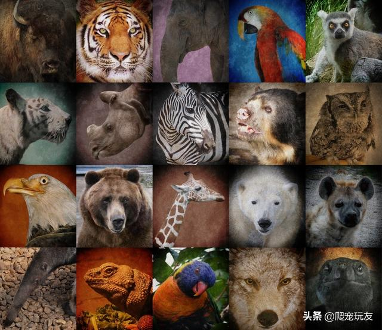

The Importance of Wildlife Conservation

Wildlife conservation is essential to maintaining biodiversity and the balance of ecosystems on our planet. Many species are on the brink of extinction due to habitat loss, poaching, climate change, and pollution. Protecting these species is not only about saving individual animals but also preserving the vital roles they play in ecosystems...
What Are the Challenges in Wildlife Conservation?
Some of the major challenges in wildlife conservation include:
- Habitat destruction due to human development and deforestation.
- Illegal poaching and wildlife trafficking for profit.
- Climate change affecting migration patterns and food sources.
- Lack of awareness about the importance of conservation efforts.
How Can We Help?
As individuals, we can contribute to wildlife conservation by supporting organizations dedicated to protecting wildlife, reducing our carbon footprint, avoiding products made from endangered species, and educating others about the importance of preserving nature.
Endangered Species and Their Role in Ecosystems
Endangered species are those at risk of extinction in the near future. The decline of these species can lead to imbalances in ecosystems. For example, the loss of apex predators can lead to an overpopulation of prey species, which can devastate vegetation and other animal populations...
Examples of Endangered Species
Some of the most iconic endangered species include:
- Amur Leopard - Fewer than 100 remain in the wild.
- Sumatran Orangutan - Declining due to habitat loss and poaching.
- Vaquita - A small whale species with only around 10 individuals left in the wild.
The Importance of Conservation Programs
Conservation programs play a crucial role in safeguarding endangered species. These programs often involve protecting natural habitats, restoring damaged ecosystems, and promoting sustainable practices that reduce human impact on wildlife.